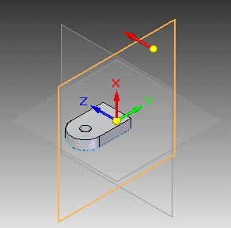
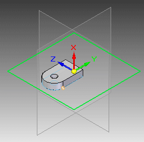
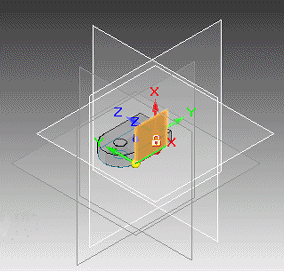
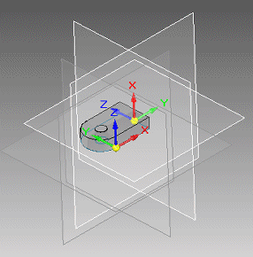

Create a new part within an assembly
You can create a new part within an assembly using the Create Part In-Place command. If you are working in a newly created assembly document, you must save that document before you can create a part in place.
-
Choose the Create Part In-Place command
 .
. -
In the Create Part In-Place dialog box, do all of the following:
-
Choose a document template that matches what you want to create.
-
Specify a name and location for the new document.
Note:In Solid Edge Embedded Client, the file properties are defined in Teamcenter in the New Document dialog box.
-
Select the By Graphic Input option.
Tip:You also can create new parts and subassemblies relative to the assembly origin. To do this, choose either the Coincident With Assembly Origin or the Offset From Assembly Origin option instead of the By Graphic Input option.
-
(Optional) Select Ground Parts And Assemblies.
-
To create the part and begin editing it, click the Create Part And Edit button.
Tip:To only create the part document, click the Create Part button.
-
-
On the selected part, click a planar face or an existing reference plane to use as the XY base plane for the new part.
Example:
-
Click a point on a part face, a part edge, a sketch region, or another plane to define the origin of the XY plane.
You can click an endpoint, midpoint, vertex, or an origin point on an arc, circle, or circular edge.
Example:
-
You can use the sketching and feature creation commands to construct the part. To get started, do the following:
-
Select the first command you want to use, such as the Line command.
-
Highlight and lock a sketch plane by pressing F3 or clicking the lock symbol.
Example:
To learn about plane locking, see the Help topic, Lock or unlock a sketch plane.
The origin triad now is displayed on the part construction plane you specified, ready for you to begin drawing and sketching features.

-
-
Save the changes you make to the new document.
-
On the ribbon, click Close And Return to return to the Assembly document.
-
You can control whether the part is displayed in another assembly, a drawing of the assembly, or included in a parts list with the Reference options on the Properties dialog box. See the Help topic, Reference parts.
-
You cannot create new parts in an assembly until the assembly has been saved.
How do I
Hide the remaining parts in an assemblyCreate an assembly with the Create Assembly command
Close an in-place activated document
Close a part without saving changes
Learn more
Changing assembly componentsLook up more details
Revert commandHide Previous Level command
Assembly of Active Model command
Create Part In-Place command
Create Part in Place command bar
Create Assembly dialog box
Create Part In-Place Options dialog box
Close and Return command
Create New Subassembly Dialog Box